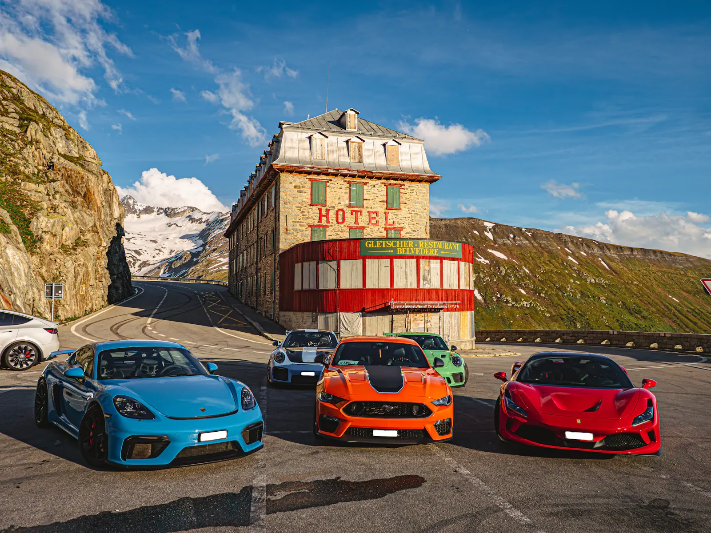
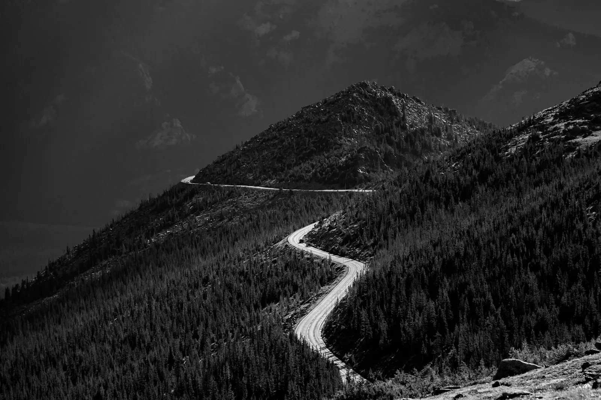

НА ДЕНЬ / РАННИЙ СТАРТ
Озёрная петля
Второстепенные дороги, кофе у воды и возвращение к вечеру.
Спокойный темп
Клуб хороших дорог
Выезжаем ради поворотов, видов и разговоров на остановках. Марка автомобиля не важна. Важно, что вам хочется в путь.
Куда
01 / Направления
Выберите формат и сохраните план для себя. Это демонстрационные маршруты: конкретные места, даты и состав группы определяет организатор перед выездом.
НА ДЕНЬ / РАННИЙ СТАРТ
Второстепенные дороги, кофе у воды и возвращение к вечеру.
ВЫХОДНЫЕ / С НОЧЁВКОЙ
Дорога вверх, длинные остановки и утро вдали от города.
НА ДЕНЬ / ПОСЛЕ ОБЕДА
Короткий выезд вдоль берега. Без раннего подъёма и плотного графика.
План выезда / 01
Однодневная поездка без жёсткого графика. Подходит для первого знакомства с клубным форматом.
Проверка связи, обсуждение дороги и удобного темпа.
Каждый едет самостоятельно. Встречаемся в согласованных точках.
Время для разговора и фотографий, без обязательной программы.
Финиш общий, решение остаться подольше — личное.

ДОРОГА ОБЪЕДИНЯЕТ.02 / Что за клуб
Мы собираемся, чтобы ездить вместе — и оставлять каждому свободу.
Не нужно иметь редкую машину, знать устройство двигателя или доказывать, что вы быстрый водитель. Достаточно исправного автомобиля, уважения к другим и желания провести день в дороге.
Рассказать о себе ↗03 / Договоримся на берегу
Простые правила, которые делают совместную дорогу комфортной для водителей, пассажиров и тех, кто едет рядом.
Соблюдаем ПДД и дистанцию. Не пытаемся догнать группу и не провоцируем других участников движения.
Не торопим на остановках и не оцениваем автомобиль. Можно пропустить участок или вернуться раньше.
Договариваемся о точках встречи и способе связи. Об изменении планов сообщаем, когда безопасно остановились.
Не оставляем мусор, не мешаем местным жителям и спрашиваем разрешение перед публикацией чужих фотографий.
04 / Перед выездом
Отметьте готовое. Список хранится только на открытой странице и не передаётся организатору.
05 / Давайте знакомиться
Составьте карточку участника: как к вам обращаться, на чём ездите и какие поездки вам ближе.